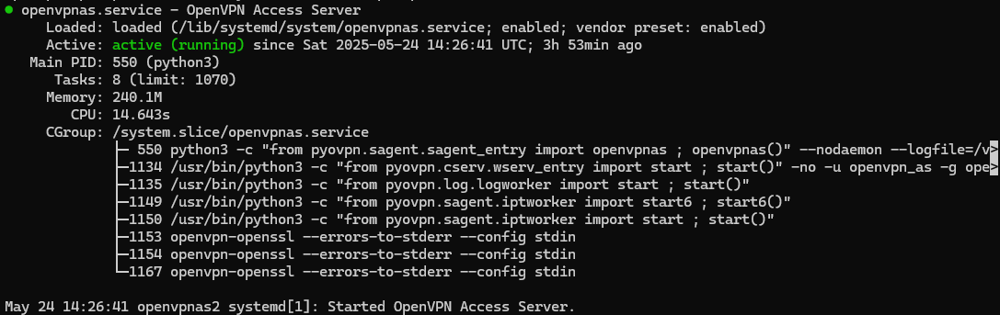
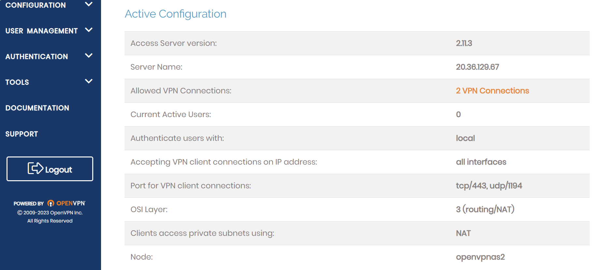
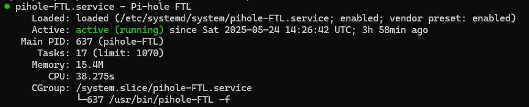
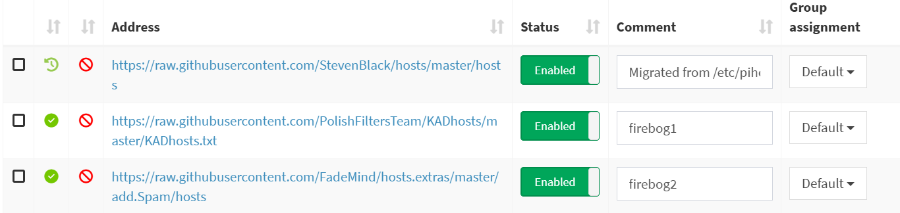
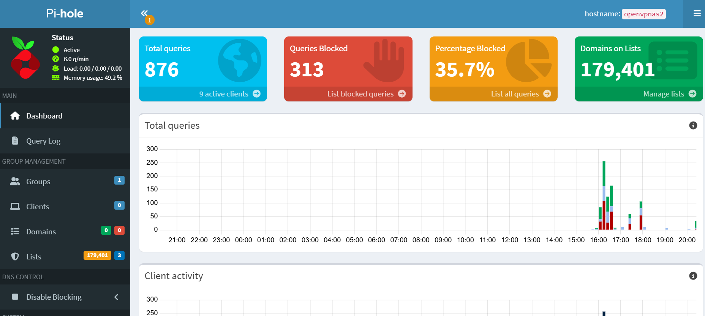

Privacy Gateway on Microsoft Azure
A self-hosted VPN and DNS sinkhole on a cloud VM — encrypted browsing, network-level ad blocking, and full traffic control without third-party services.
play_circle Watch DemoMotivation
Commercial VPNs often trade one point of surveillance for another by routing traffic through third-party infrastructure. This project was driven by the need for full-stack ownership:
- Trust: Eliminating third-party intermediaries for data handling.
- Control: Managing the server, DNS resolver, firewall, and encryption keys personally.
- Infrastructure: Leveraging Microsoft Azure to provision and validate a secure cloud environment from scratch.
What I Built
-
lock
OpenVPN server on Azure VM
Provisioned a Linux VM on Azure and configured OpenVPN to establish encrypted tunnels for all connected clients, masking their true IP addresses behind the VM's public IP.
-
dns
Pi-hole DNS sinkhole with curated blocklist
Deployed Pi-hole alongside the VPN, loading a 179,401-domain blocklist that intercepts ad, tracker, and telemetry DNS queries at the network layer — before any content loads.
-
security
Network Security Group (NSG) firewall rules
Configured Azure NSG inbound rules to expose only the required ports (OpenVPN UDP, Pi-hole DNS, and admin access), blocking all other external traffic by default.
-
verified_user
Cloudflare DoH as upstream resolver
Set Pi-hole's upstream DNS to Cloudflare's DNS-over-HTTPS endpoint, so even the DNS queries that escape the blocklist are encrypted in transit and not visible to the ISP.
Technical Highlight — DNS Routing
The primary challenge was ensuring that all VPN clients utilized the internal Pi-hole resolver without manual client-side configuration.
-
Solution:
I implemented custom DNS push options within the OpenVPN server configuration.
-
Result:
Every connected device automatically receives the VM's internal IP as its DNS server. This creates a Zero-Config experience — any device connecting to the VPN instantly inherits ad-blocking and encrypted DNS capabilities regardless of the OS.
Results & Showcase
The 179,401-domain blocklist was assembled by merging several community-maintained lists (ads, trackers, malware, telemetry) and pruning false positives that broke legitimate services — balancing coverage against usability.
Screenshots






